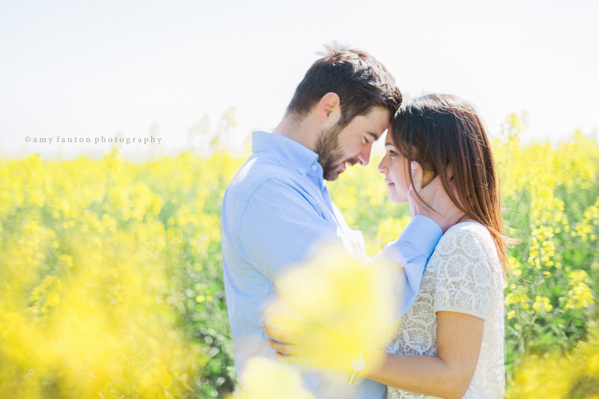
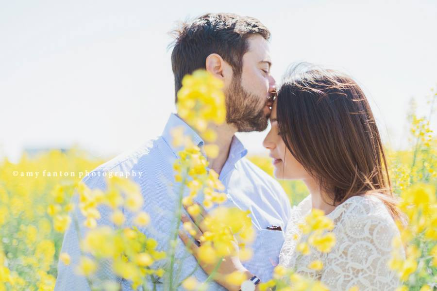

Engagements
London Flower field Engagement Session
6 May 2015

So I guess it’s probably not a surprise to any of you by now that I. love. flower. fields. Lavender, blue bells, poppies, tulips, hyacinth, daffodils–you name it–it’s pretty much my dream come true. There is something about the way they play with your senses–the color, the smell– that just feels so magical to me, as if I’ve somehow been transported into a scene fit for the Wizard of Oz.
So you can only imagine my excitement when we stumbled across this insanely gorgeous yellow field just begging to be photographed a few weeks ago. It was the perfect location to do an engagement photography session for an equally beautiful couple that is just so obviously in love.
(Oh, and they are French so of course they came dressed perfectly chic and gorgeous!) The midday sun was strong with not a bit of shade in sight and we literally only spent about 10 minutes together for the mini-session, but we still got some amazing images. Here are a couple of my faves from this mini engagement session. I hope you like!!
To book your London engagement photography session with me please email me at amy@fantonphotography.com or call me at 07462907790.
These are absolutely gorgeous! What a beautiful location and couple <3
These are such dreamy engagement pictures. I love them!
These are so beautiful and romantic. They look like they are out of a magazine!
Such a beautiful flowery photo session! Just love the colors and emotions here!
I love all the images! Very elegant and soft! Beautifully done!

